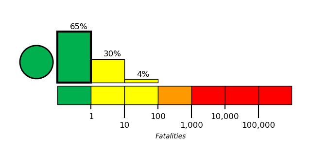
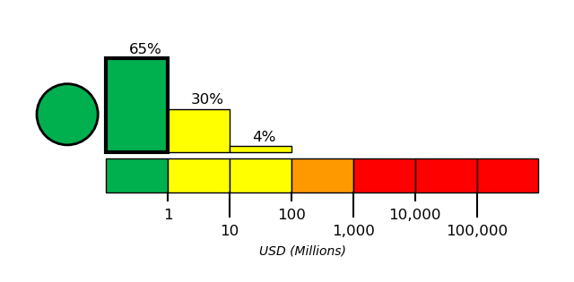

Information and plots in the section are taken from the USGS event page, accessed through ComCat.
| Field | Value |
|---|---|
| Magnitude | 4.87 (mw) |
| Time | Sat, 4 Apr 2020 01:53:18 UTC |
| Time (Local) | Fri, 3 Apr 2020 18:53:18 PDT |
| Location | 33.4895, -116.50633 |
| Depth | 10.45 km |
| Status | reviewed |
| ShakeMap | Did You Feel It? | PAGER |
|---|---|---|
| |   |